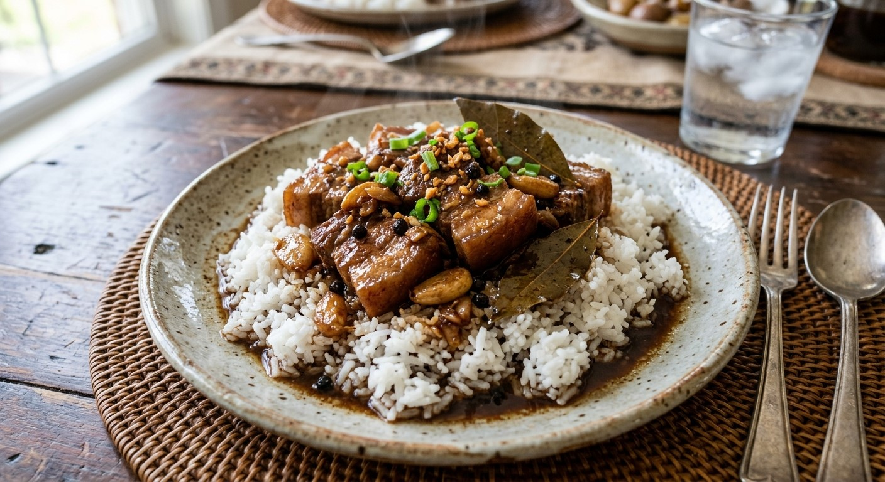

Home
Pork Abodo

Description
Adobo is a iconic and beloved Filipino dish made of tender pork shoulder or belly slow-cooked in a savory, tangy, and aromatic sauce. As the pork simmers, it absorbs the rich blend of vinegar, soy sauce, garlic, and spices, resulting in a comforting dish that is best enjoyed served hot over a bowl of steamed white rice.
Ingredients
- 2 lbs pork belly or pork shoulder, cut into bite-sized cubes
- 1/2 cup soy sauce
- 1/2 cup cane vinegar or white vinegar
- 1 whole head of garlic, crushed and chopped
- 1 medium yellow onion, sliced
- 1 cup water or broth
- 3 to 4 dried bay leaves
- 1 tablespoon whole black peppercorns
- 2 tablespoons cooking oil
- Salt and sugar to taste (optional)
Steps
- Marinate the pork: In a bowl, combine the pork cubes, soy sauce, crushed garlic, and black peppercorns. Cover and let it marinate in the refrigerator for at least 30 minutes (preferably 1–2 hours for best flavor).
- Sear the meat: Heat cooking oil in a large pot or wok over medium-high heat. Remove the pork pieces from the marinade (reserve the liquid) and sear them for about 5 to 7 minutes until browned on all sides.
- Simmer: Pour the reserved marinade and 1 cup of water into the pot. Add the bay leaves. Bring the mixture to a boil, then reduce the heat to low, cover with a lid, and simmer for 30 to 40 minutes until the pork becomes tender.
- Add vinegar: Uncover the pot and pour in the vinegar. Allow it to boil for 3 to 5 minutes without stirring to let the harsh acidity cook off.
- Reduce the sauce: Stir everything together and let it continue simmering uncovered for another 10 to 15 minutes until the sauce reduces and thickens to your preferred consistency. Taste and adjust with a pinch of sugar or salt if needed.
- Serve: Remove the bay leaves, transfer to a serving dish, and serve hot with steaming white rice.